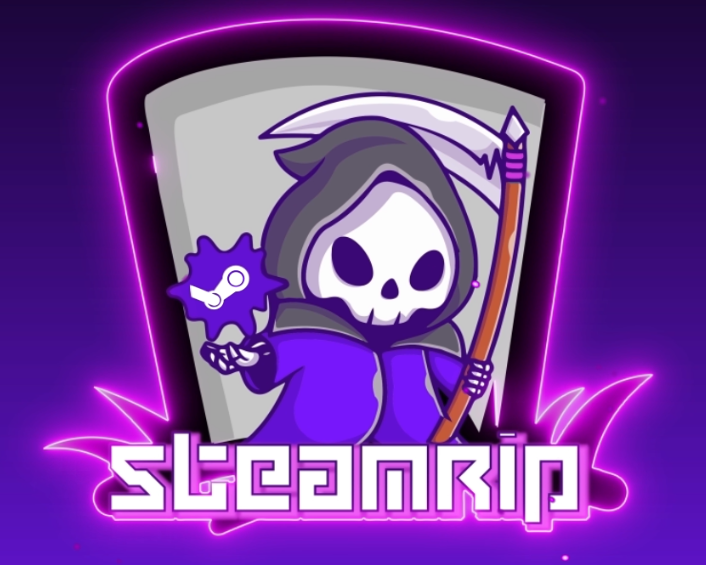
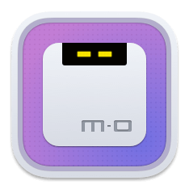

Downloaden
Dit zijn illegale websites en manieren om te downloaden, inclusief download managers en torrent sites.
MAAR WACHT!
Voordat je gaat downloaden moet ik wel eerst zeggen dat SteamRIP en de andere piracy zijn en dat het mogelijk 4russen kan bevatten. Het is bewezen dat het allemaal veilig is, maar je moet altijd blijven nadenken. Voor de zekerheid:
Zie ook "Disclaimer" onderaan de pagina
SteamRIP
SteamRIP is een website waar je illegaal Steam games kan downloaden.
DODI Repacks
Gebruik DODI Repacks alleen als het niet op SteamRIP staat!
qBittorrent (FOSS)
qBittorrent is een manier hoe je torrents kan downloaden. Torrents zijn meestal sneller en veiliger dan normale downloads.
Motrix (FOSS)
Motrix is de snelste download manager die ik ooit heb gebruikt. Het is FOSS en werkt ook op Linux en Mac. Het is gemaakt in Electron (veel mensen hebben hier haat naar). Extension werkt niet meer (tenminste bij mij) en het is een stuk simpeler om gewoon de download link te kopiëren. In Brave kan dit met show all (staat links onder aan je scherm als je hem aan het downloaden bent) en dan onder de naam van je download staat de download link. Rechtermuis knoppie hierop en klik "copy link address". Met Firefox werkt dit ongeveer hetzelfde.
yt-dlp (FOSS)
yt-dlp is een fork van youtube-dl en kan youtube videos downloaden. Dit moet worden gedaan met de terminal.